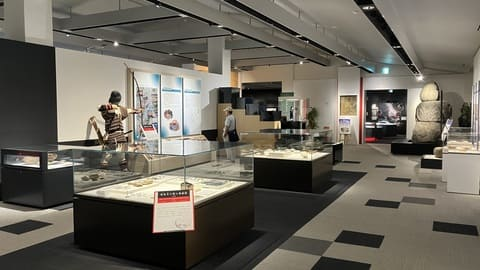
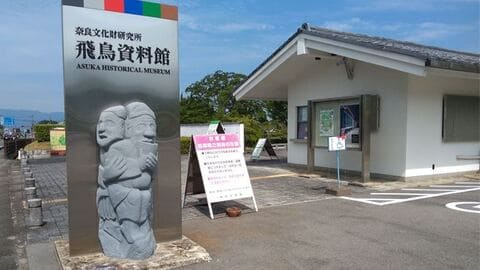
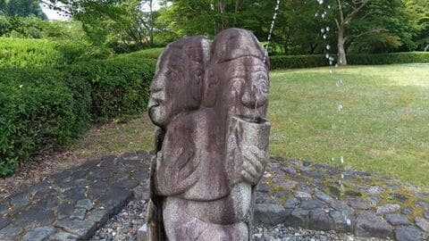

飛鳥時代の貴重な資料
飛鳥地方で発掘された文化財や古代寺院に関する資料を見ることができます。

飛鳥資料館は、飛鳥時代の歴史や文化を紹介する国立の博物館です。 飛鳥地方から出土した石造物や瓦、古代寺院に関する資料などを展示し、飛鳥の歴史を分かりやすく学ぶことができます。 飛鳥寺や飛鳥水落遺跡など周辺の歴史スポットと合わせて訪れたい施設です。
| 営業時間 | 9:00〜16:30（入館は16:00まで） |
|---|---|
| 定休日 | 月曜日（月曜日が祝日の場合は翌平日）、年末年始 |
| 料金 | 一般350円、大学生200円、高校生以下無料 |
| 所要時間 | 45分〜1時間 |
| 駐車場 | 飛鳥資料館 駐車場 |
| アクセス | 近鉄飛鳥駅から明日香周遊バス「飛鳥資料館」下車すぐ |
| 地図 | 地図はこちら |

飛鳥地方で発掘された文化財や古代寺院に関する資料を見ることができます。

庭園には飛鳥を代表する石造物のレプリカが配置されており、実物の雰囲気を感じながら見学できます。
飛鳥資料館は、飛鳥地域の歴史や文化を保存・紹介するために設立された博物館です。 飛鳥時代の宮殿跡や寺院跡から出土した資料を中心に展示し、日本の古代史を学べる施設として多くの人が訪れています。